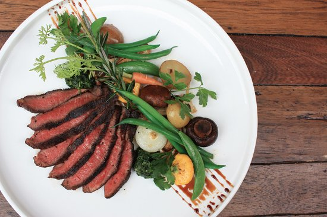

Aburi Steak

Aburi steak, also known as flame-seared steak, is a Japanese culinary technique where high-quality steak is partially grilled or seared using an open flame or blowtorch. The term "aburi" translates to "flame-seared" in Japanese. This method allows the outer layer of the steak to caramelize and develop a delicious crust, while the inside remains tender and juicy.
Aburi steak is often served sliced, allowing diners to enjoy both the seared outer layer and the succulent interior. It is commonly accompanied by sauces like teriyaki, ponzu, or a savory soy-based glaze, adding depth and richness to the dish. The result is a tender, flavorful steak with a delightful contrast between the crispy, smoky exterior and the melt-in-your-mouth center.
Ingredients
- 1 (12 to 16 ounce) boneless rib eye steak
- 1/2 cup short grain white rice
- 3/4 cup water
- 2 teaspoons rice vinegar
- 1 teaspoon white sugar
- 1/2 teaspoon salt
- 1/4 cup less-sodium soy sauce
- 1 tablespoon pure maple syrup
- 1 tablespoon Asian-style chili paste (such as sambal oelek)
- 1 tablespoon vegetable oil
- 1/3 cup sour cream
- 1/4 teaspoon lime zest
- 2 teaspoons fresh lime juice
- 2 teaspoons wasabi paste (NOT RECOMMENED IF YOU CAN'T EAT SPICY FOODS), or more to taste
- 2 teaspoons furikake seasoning or toasted sesame seeds
Steps
- Put steak on a waxed paper-lined baking sheet. Freeze until just firm, about 1 hour.
- Meanwhile, for sushi rice, rinse rice under cold running water, rubbing grains together with your fingers. Combine rice and water in a small saucepan. Bring to a boil; reduce heat to low. Simmer, covered, until tender and sticky, about 15 minutes. Remove from heat. Stir together vinegar, sugar, and salt in a small bowl. Stir into rice. Cover; let cool about 45 minutes.
- Meanwhile, thinly slice steak across the grain into 24 (1/4-inch-thick) slices. Transfer steak to a zip-top bag set in a shallow dish.
- Whisk together soy sauce, maple syrup, chili paste, and oil in a small bowl. Pour over steak in bag; seal bag. Chill at least 20 minutes or up to 2 hours.
- For sauce, whisk together sour cream, lime zest, lime juice, and wasabi paste.
- Shape rice with wet hands into 24 (1-tablespoon) oval-shaped portions. Drain steak; discard marinade. Put steak on a foil-lined baking sheet set on a wire rack. Char steak with a kitchen torch, turning once, until desired doneness, about 5 minutes for entire recipe. Put 1 steak piece on each rice portion. Sprinkle with furikake seasoning and serve with sauce.
And there you have it, a delicious, juicy aburi steak
Return to main page